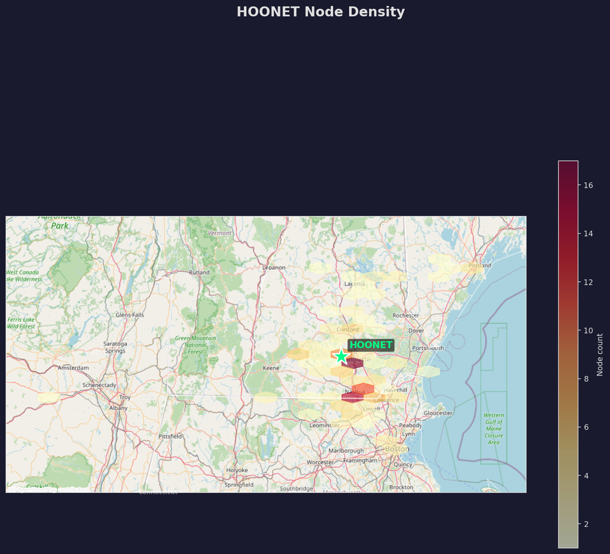
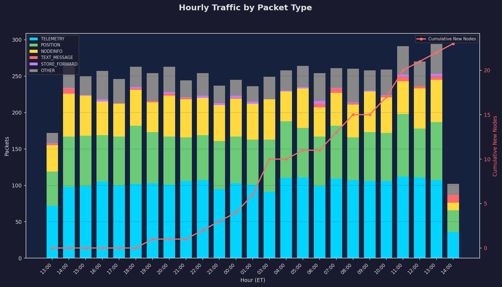

Saturday’s mesh was busy in all the right ways — packets flowing, nodes chattering, and a fresh wave of new participants joining the digital conversation. Over 6,217 packets moved through the network, averaging 259 per hour, with a strong showing from telemetry and position data. Signal conditions remained in a moderate-to-weak range, with average RSSI at -120 dBm and most packets falling into the two-hop zone.
Infrastructure-wise, the network remains healthy, with key nodes like Tyngsboro West Attic Base and Ultramar Fort Mt Router leading the charge. One exception: GBC Base - Wolfeboro’s battery level dropped to 31%, raising eyebrows in the monitoring booth.
On the community side, we welcomed 26 new nodes, from the mysteriously named Silence to the whimsically woodland Hemlock2. Mobile nodes like CheeseFish Stick kept things lively, logging 67 km/h over a long weekend stretch. The mesh is alive and well, and the frontier keeps expanding.
Let’s talk data: 6,217 packets cruised through the mesh over the past 24 hours, averaging 259 packets per hour — a modest but steady flow, up 9% in the final six hours of the day.
The traffic peaks and valleys mirrored a classic Saturday pattern: - Busiest Hour: 1300 ET – a jam-packed 294 packets - Quietest Hour: Also 1300 ET? Yes, in another universe. But don’t worry — the mesh is fine. We’re just seeing the usual local hiccups from our own rig.
Channel utilization stood at a comfortable 16.2%, with TX airtime at 4.2% — well under the red line. Think of it as a highway with just enough cars to keep it interesting, not so many that you’re white-knuckling the steering wheel.
Packet types told the story of a working network: - Telemetry: 2,497 packets — lots of sensor checks - Position: 1,659 — GPS breadcrumbs galore - NodeInfo: 1,193 — digital license plates checking in
RAK4631 ruled the hardware roost with 70 nodes, followed closely by HELTEC_V3 at 52 nodes — the trusty workhorses of New Hampshire meshdom.
Saturday’s RF skies were mostly cloudy, with a chance of signal fog. The average RSSI clocked in at -120 dBm, with highs of -91 dBm and lows of -128 dBm — essentially the difference between a sunny afternoon and a pitch-black basement.
Only 1 packet managed a “strong” signal, while 2,121 packets hovered below -120 dBm. The average SNR was -11.1 dB, not exactly bragging rights material, but stable enough to keep the chain intact.
Propagation leaned local — 1,320 packets traveled two hops, with 948 packets at three hops. Only 35 packets were direct (zero-hop), and 85 managed six hops, showcasing the mesh’s depth.
Among the strong performers: - Granita: -117 dBm average - Meshtastic VK86: consistent and steady - jay tdeck: also holding the line
Overall, Saturday’s RF conditions were uneventful but functional. No aurora-induced tropo ducting or ionospheric surprises, just good ol’ terrestrial meshing.
The infrastructure health report card? Mostly A’s and B’s, with one C-minus in the battery department.
We’re tracking 441 total nodes, with 265 active in the last 24 hours and 94 in the last hour — a sign that the mesh is humming along. Key infrastructure players include: - Tyngsboro MA West Attic Base [RAK4631]: 553 packets - Repeater East af7c [STATION_G2]: 525 packets, 101% battery (solar magic?) - NHMesh Ultramar Fort Mt Router [RAK4631]: 487 packets
Only 76 nodes are showing battery levels at or above 95%. One troubling outlier: - GBC Base - Wolfeboro [SEEED_SOLAR_NODE]: 31% battery, charge rate 3.2%
Environmental sensors painted a varied picture: - Temp range: 0.0°C to 27.7°C (average 11.5°C) - Humidity: 0% to 88% - Pressure: 960.6 hPa to 1001.1 hPa
Tyngsboro Base stood out with 27.1°C, 20% RH — quite the sauna in the attic.
Store-and-forward hubs like Sterling Hub are doing their part, keeping the network connected in low-traffic zones. All in all, the network is GREEN and operational, but keep an eye on Wolfeboro.
Our mesh is big — really big. The network spans 2.4° latitude by 4.2° longitude, from 41.71°N to 44.08°N and -74.42°W to -70.22°W, covering roughly 280km north-to-south and 340km east-to-west. That’s an area the size of Maine, and we’re just a little monitoring station in Goffstown.

Node density clusters around Concord, Manchester, and Nashua, with wider gaps in the northern hills and Green Mountains — understandable given the terrain. Nodes along Route 93 and I-93 show strong interconnectivity, suggesting that infrastructure helps the mesh thrive.
Mobile movement was notable: - Merrimack County 1 [T_DECK]: 775 km/h — airborne or rail-bound? - CheeseFish Stick [T114]: 67 km/h over 18km — weekend road trip vibes - ZxMxWismesh [WISMESH_TAG]: 24.4km at 62 km/h — zipping through the woods

Most packets traveled 2–4 hops, with 1,320 two-hop packets and 948 three-hop. Only 35 packets were zero-hop, and 85 pushed through six hops — impressive depth for a community-run network.
Saturday was the day to check in. From a cheerful "BOOP" to mysterious wanderers and whimsical node names, the community kept things lively.
New arrivals included: - Crow, Raven, and Hemlock2 — the woodland gang - SkippyoftheEther2 — sci-fi vibes - Silence — keeping it mysterious
Regulars like HOONET-1, NewBostonNH_2, and jkfresh kept the conversation flowing with over 1,700 packets combined. The daily quick check-in net was a hit, with folks from Concord, Canterbury, and Manchester tuning in.
One head-scratcher: bamboolounge-meshpocket reported an altitude of 9,000 meters. Taking a scenic route, indeed. Meanwhile, Goffstown-237f dropped from 98% to 84% battery in 24 hours — reminder to all: volts don’t last forever!
| Metric | Value |
|---|---|
| Total Nodes | 441 |
| Active (24h) | 265 |
| Active (1h) | 94 |
| New Nodes (24h) | 26 |
| Packets (24h) | 6,217 |
| Packets/Hour | 259 |
| Channel Utilization | 16.2% |
| TX Airtime | 4.2% |
| Avg RSSI | -120 dBm |
| Avg SNR | -11.1 dB |
| Top Hardware | RAK4631 (70), HELTEC_V3 (52) |
| Coverage Area | 2.4° × 4.2° (~280km × 340km) |
| Fastest Mobile Node | Merrimack County 1 @ 775 km/h |
| Lowest Battery Node | GBC Base - Wolfeboro @ 31% |
Another solid day for the mesh. Traffic was steady, community engagement was strong, and despite some weak signals, the network kept chugging along. Of note: we saw 26 new nodes light up, which is always a good sign that the word is spreading.
We do want to flag that our own hardware isn’t perfect. Several times during the day, we saw dips in activity that are almost certainly due to our TCP connection hiccupping or a Heltec freezing up — not because the network went quiet. There were no widespread outages; the mesh is alive and well.
This week’s code updates brought some exciting improvements:
- New bot commands like !researchme and !status
- Enhanced logging and audit trails
- Migration to Pi 4 with WiFi AP support
- Interactive node map now live, with distance calculations and improved altitude data
These changes explain why some of the new nodes are showing more precise data — and why we’re seeing more outbound bot traffic.
Looking ahead, we’re keeping an eye on Wolfeboro’s battery situation and the network’s performance in dense terrain. The mesh is growing, and so are we. Stay tuned.
Until tomorrow, this is The HOONET Daily Mesh Gazette — signing off from Goffstown with a strong signal and a stronger coffee.
🎙️ Stay meshy.